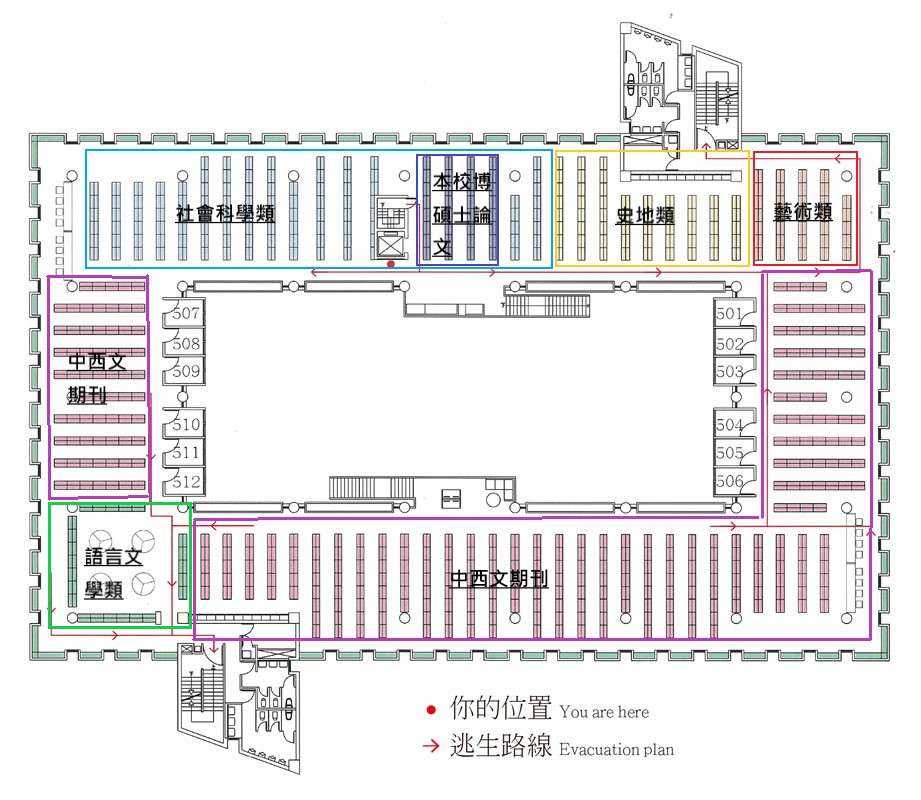
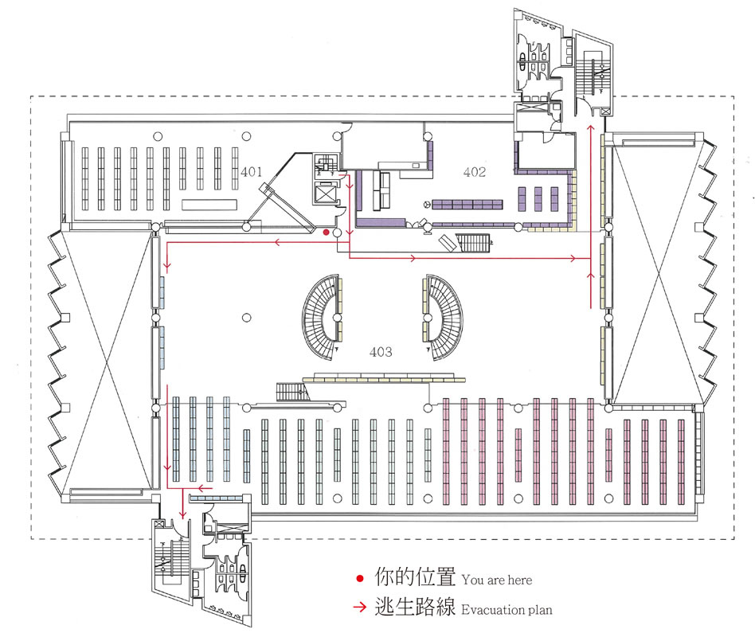
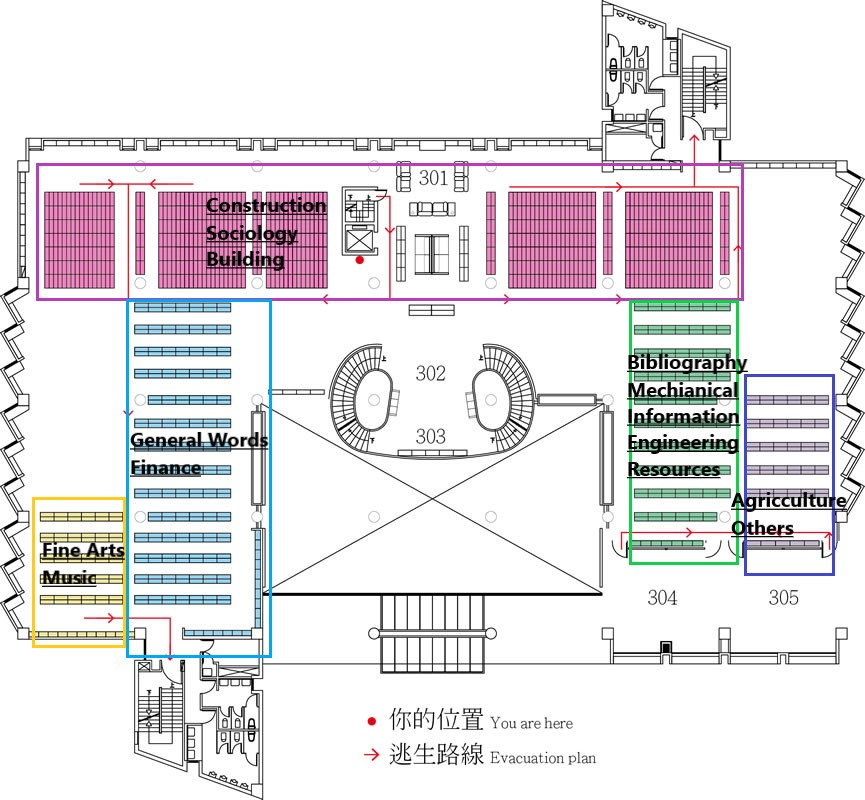
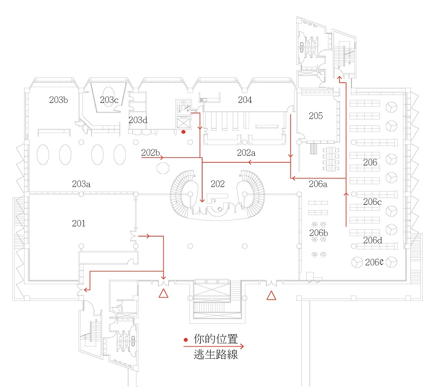
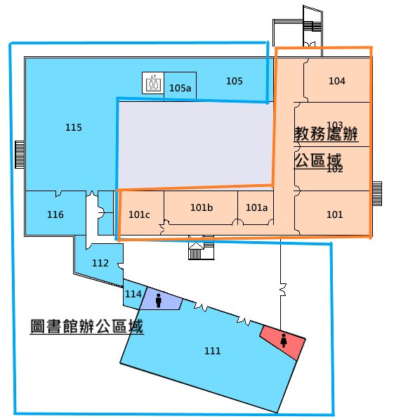
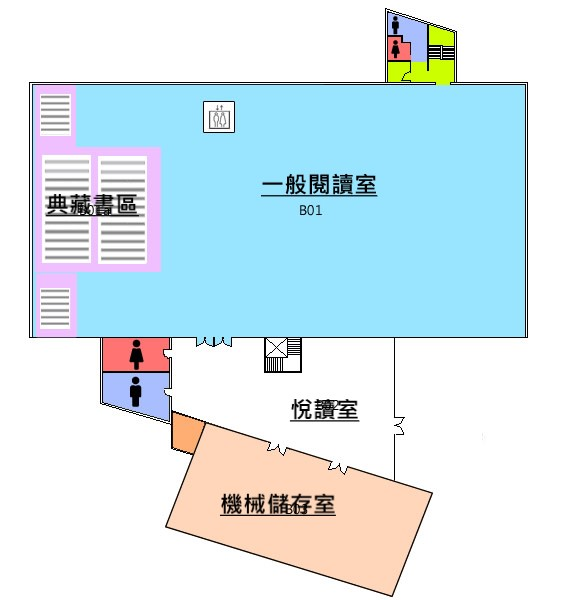

５Ｆ 中文圖書、裝訂期刊
中文書庫500-999、中西文裝訂期刊、本校博碩士論文、501-512研讀室。 圖中央為挑空區，左右兩側各有 6 間研讀室，圖上方為本校博碩士論文及中文書庫500-999類， 圖的四周為中文800類的壁架書庫，中西文裝訂期刊在圖的下方及左右兩側。

４Ｆ 中文圖書
中文書庫000-499、基督教史料室、明月前身圖書室、中文新書展示區 圖中央為中文新書展示區，上方為基督教史料室及明月前身圖書室，下方為中文書庫。

３Ｆ 西文圖書
西文書庫、全人閱讀區、主題書展區、西文新書展示區、創意學習室、書刊整理室 圖中央為主題書展及西文新書展示區，上方為全人閱讀區。創意學習室及書刊整理室在圖的右下方。

２Ｆ 參考、檢索、現期期刊、視聽
中文書庫500-999、中西文裝訂期刊、本校博碩士論文、501-512研讀室。 圖中央為挑空區，左右兩側各有 6 間研讀室，圖上方為本校博碩士論文及中文書庫500-999類， 圖的四周為中文800類的壁架書庫，中西文裝訂期刊在圖的下方及左右兩側。

１Ｆ 圖書館、教務處、秀德廳
圖書館的秀德廳、秘書室、館長室、書香雅集、採編組、主機房、系統組，及教務處的教師教學發展中心、 普仁小集、教學專業攝影棚、SNG視訊教室、數位教材後製室、專業倫理教學發展中心、數位錄音室。 圖中央為挑空區，其左側為採訪編目組及書香雅集，上方為系統組及主機房，右側為教師教學發展中心、 普仁小集、教學專業攝影棚及SNG視訊教室，下方則為數位錄音室、專業倫理教學發展中心及數位教材後製室。 圖下方為館長室、秘書室及秀德廳。

Ｂ１ 典藏書區、閱覽室
悅讀室、機械儲存室、一般閱覽室、典藏書區。 圖中央為一般閱覽室，其左側為典藏書區。圖下方為悅讀室及機械儲存室，悅讀室的右側為地下1樓的入口。
